Jumping Seedling (model family Fydel) is a from-scratch, CPU-native 1B-parameter transformer with a hard constraint: no GPU is available for training or inference, and the target deployment hardware is a commodity 6-core AMD Ryzen 5 5500U laptop processor (Zen 2, AVX2, no AVX-512, 8 MB shared L3). Dense causal self-attention costs O(N2) per layer, and at the context lengths this project targets (512–8192 tokens), full-attention layers already dominate decode cost on this hardware. A cheaper causal attention mechanism that does not sacrifice retrieval quality is therefore directly load-bearing for the project's viability, not an optimization nicety.
The Monarch attention factorization offered a promising starting point: block-structured key/value compression with a learned or iteratively-refined representative per block, offering a route to sub-quadratic attention cost. This report documents what happened when we tried to make that route actually work under adversarial testing, across eight distinct design points, ending in a single survivor whose defining property turned out to be simple to state and easy to violate accidentally: never let a compressed summary decide what gets excluded before a real score has been computed for it.
Our contribution is threefold. First, an adversarial evaluation methodology—the same-norm-controlled needle probe—that we show is necessary, not optional: five independent untrained representative-construction mechanics (Section 4.2) passed easier tests before failing this one, and a sixth, architecturally distinct mechanism (SlidingMonarchAttention, Section 4.3) had already been reported as a "strong result" under the project's own earlier, pre-control methodology. Second, a full account of every mechanism we tried and why each failed, including two cases where an initially favorable result was reversed after a self-caught measurement bug. Third, TauMonarchAttention itself: a design that survives every adversarial construction we threw at it, together with a real, hardware-measured cost analysis that also reversed an initial (overly optimistic) analytical estimate once profiled on actual silicon.
This investigation's starting point is MonarchAttention [Monarch Attn], which computes an approximate projection of an already-trained dense softmax attention layer onto the class of Monarch matrices—block-diagonal butterfly-factorized structured matrices originally introduced for efficient training [Monarch]—via an optimization-based algorithm, with no additional training required. Applied zero-shot to existing pretrained transformers, it reports substantial wall-clock speedups over FlashAttention-2 (1.4× at N=256 up to 8.2× at N=16K) with minimal quality loss, at Θ(N√N d) compute and Θ(Nd) memory.
That result does not transfer directly to this project's setting, for two reasons specific to Jumping Seedling. First, MonarchAttention's projection target is a real, already-learned dense attention pattern from a pretrained model; there is no such pattern to project onto when a model is trained from scratch, as Jumping Seedling is. Second, MonarchAttention's reported evaluation is non-causal; a from-scratch, autoregressively-trained language model requires a causally-masked mechanism from the first training step onward, not a post-hoc conversion applied after training completes. This investigation is, in effect, an attempt to answer a harder version of MonarchAttention's question: can a Monarch-factorized, block-representative-based attention mechanism be designed and validated from scratch, under a causal mask, with no pretrained dense-attention pattern available to approximate—rather than converted, post-hoc, from one that already exists? The eight mechanisms in Section 4, and their uniform failure under adversarial testing, are the empirical answer we found to that question for the block-representative family of approaches; the fact that MonarchAttention's own zero-shot conversion succeeds in the easier, non-causal, pretrained-weight setting is not in tension with this finding—it is evidence that a real, already-learned attention pattern to project onto is doing much of the work that a from-scratch, adversarially-probed representative construction has to do without.
Sparse and linear-attention mechanisms more broadly reduce attention's O(N2) cost by either (a) restricting which key/value pairs each query attends to (block-sparse, sliding-window, or routed attention), or (b) replacing exact per-key attention over a region with a compressed summary of that region (landmark tokens, block representatives, low-rank projections). Louver-style threshold selection reframes the first category as halfspace range searching: return exactly the set of keys whose score against the query clears a threshold τ, with a guarantee that nothing above τ is silently excluded. Landmark Attention and related block-representative schemes, including MonarchAttention's own projection target, fall into the second category: a learned, optimized, or heuristic summary vector stands in for a block, and attention over that summary substitutes for attention over the block's real contents.
The two categories make different promises. Threshold selection guarantees that a key is evaluated—its own real score is computed and compared against τ—before any exclusion decision is made about it. A compressed representative, by construction, decides what a block "is about" before the query ever sees the block's real contents; if the representative's construction discards or dilutes the one piece of content a particular query actually needed, no downstream mechanism can recover it, because that content was never scored in the first place. This report is, in large part, an empirical demonstration of how often the second failure mode occurs in practice—including in mechanisms whose defining feature (Sinkhorn-style iterative refinement, or gradient training) looks, on paper, like it should mitigate exactly this risk.
Our core evaluation tool places a single "needle" key/value pair at a known position in an otherwise random background sequence, with the needle's direction encoding retrievable information and a query built to align with that direction. The critical control—absent from several of our own earlier tests, and the source of the paper's first self-correction—is that the needle key's norm is set equal to the expected norm of a background key (BACKGROUND_NORM = 0.5 × √D). Without this control, any mechanism that can be fooled by raw magnitude (a needle that simply "sticks out" numerically) will appear to succeed regardless of whether it is doing genuine content-based retrieval. We show in Section 4 that this is not a hypothetical risk: it is the single artifact responsible for five independent false-positive results in this investigation.
An early single-trial result on one of the mechanisms we tested (K=1 needle, zero-competition) returned a strongly negative mean cosine similarity, initially read as decisive evidence of catastrophic failure. A 30-seed rerun of the identical construction returned a positive mean cosine (0.215 ± 0.041)—the original result was an unlucky single draw, not a representative finding. Every quantitative result in this report that matters for a design decision uses n ≥ 30 independent seeds unless stated otherwise.
For the one open-ended, iteratively-improvable design axis we explored (trained landmark construction, Section 6), we pre-committed a numerical pass/fail bar before running the deciding experiment: recovering ≥80% of the reference mechanism's retrieval quality must not require admitting >50% of candidate blocks to real scoring, or the mechanism has no economic case over the reference design. We report the outcome of this criterion in Section 6.3, including a case where our own first attempt at running the test contained a bug that silently satisfied the criterion for the wrong reason.
We adopt, and repeatedly needed, a standing rule established after two independent instances of misleading PyTorch reference-implementation timing early in this project: analytical FLOP accounting and un-optimized reference-implementation wall-clock time are both treated as correctness scaffolding, never as a cost verdict, until measured on the actual target hardware with a real compiled kernel. Section 7 reports a case where this rule caught a real, large (56% of total cycles) unaccounted cost that an analytical model had missed entirely.
Table 1 summarizes every mechanism tested. Full detail for each follows.
| Mechanism | Selection basis | Same-norm probe result | Verdict |
|---|---|---|---|
| Dense (baseline) | full O(N²) exact attention | reference (mean cos 0.86–0.88) | reference |
| Bucket routing | k-means centroid | fails under adversarial construction | fails |
| Bounding-ball pruning | Cauchy–Schwarz upper bound | 0% prune rate at all N tested | dead (geometry too loose) |
| R-landmark variants (5×) | untrained heuristic (magnitude, FPS, k-means, random-reuse, maxpool) | all fail single-needle detection | fails (5/5) |
| SlidingMonarchAttention | T-iteration Sinkhorn representative | mean cos 0.19–0.22, structural ceiling | fails |
| CausalMonarchAttention | dual causal/full representative | mean cos 0.15–0.23, worse than Sliding | fails |
| LSH-style hashing prefilter | random-hyperplane sign bucketing | exclusion cliff under perturbation | fails |
| Trained landmark selection | gradient-trained pseudo-query pooling | fails pre-committed kill criterion | closed |
| TauMonarchAttention | real per-key threshold selection | mean cos 0.91–0.93, matches/exceeds dense | survives |
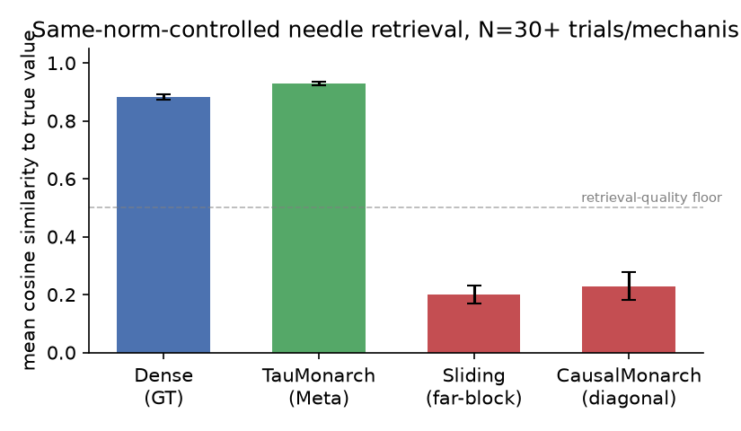
The earliest mechanism evaluated: k-means cluster the key space, route each query to its nearest centroid's bucket, attend only within that bucket. Natural-case (random, non-adversarial) accuracy was strong (96.4% recall at n=1000), which is precisely why this mechanism is instructive: an adversarial construction placing a decoy key near the query's Voronoi boundary drove the failure rate to 83%. The natural case alone would have been sufficient to ship this mechanism; only deliberate adversarial construction revealed the defect.
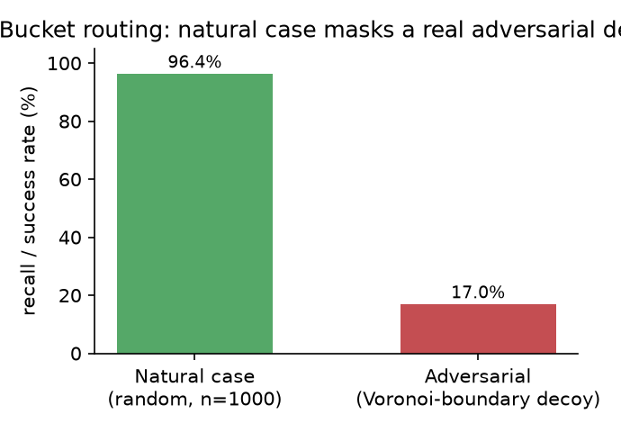
Five distinct untrained representative-construction heuristics were tried as a generalization of bucket routing's centroid to a richer per-block "landmark": magnitude selection, farthest-point sampling, k-means, random content-reuse, and max-pooling. All five initially appeared to pass single-needle detection tests. Introducing the same-norm control (Section 3.1) reversed every one of these results: all five failed outright once the needle key's magnitude no longer provided a free detection signal. This is the finding that established the same-norm control as mandatory for the remainder of the investigation, and it directly motivated re-examining every prior "passing" result in the project—including SlidingMonarchAttention, whose own original validation predated this control (Section 4.3).
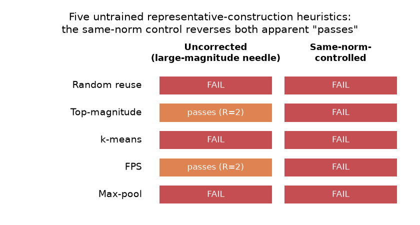
SlidingMonarchAttention combines an exact local attention window with a single T-iteration-refined Monarch representative for each block outside the window. Its original validation (natural-case, non-adversarial, large-magnitude needle) reported a strong result and was, at the time, the strongest finding of the investigation. That validation predates the same-norm control by a substantial portion of the project's history.
Re-testing under the same-norm control: a single-trial result (K=1, zero competition) returned a negative mean cosine, initially read as a clean detection failure. A 30-seed rerun (Section 3.2) returned a materially different, less dramatic result—chronically weak retrieval (mean cosine ∼0.20, only 7–12% of trials exceeding a 0.5 cosine threshold) rather than a clean sign-flip failure. Running the identical construction through dense attention and TauMonarchAttention on the exact same scenes confirmed the scene itself is not intrinsically hard—both alternatives retrieve the needle reliably (mean cosine 0.86–0.93, 100% success rate)—isolating the weakness to SlidingMonarchAttention's representative construction specifically.
Two follow-up sweeps identified the mechanism precisely (Figures 4–5). First, mean cosine degrades monotonically as the number of competing far-block representatives grows (Figure 4), consistent with the block's own single representative being diluted, pre-score, by within-block averaging, then competing post-score against every other block's representative in one joint softmax—two compounding dilution stages, neither of which a real-per-key-scoring mechanism pays. Second, and decisively, retrieval quality is identical to four decimal places across T = 3, 5, 10, and 20 refinement iterations (Figure 5). T-iteration only ever refines representatives against other representatives under a block-triangular mask; it never reaches back to raw per-key content. Once a block's content is collapsed to one vector at construction time, no amount of representative-to-representative message-passing recovers information never carried into that vector. This is a structural ceiling, not a refinement-budget problem: no amount of additional T-iteration compute would have fixed this mechanism.
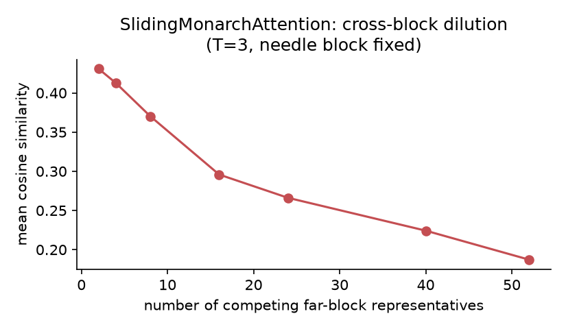
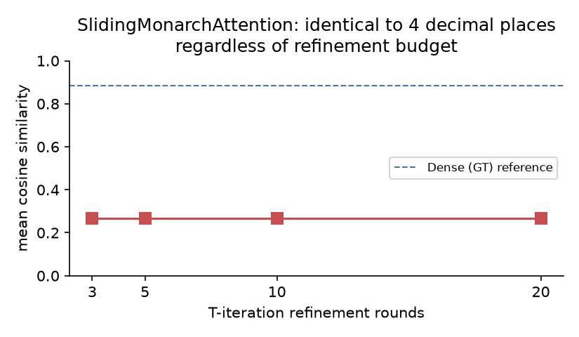
The original Monarch-family causal-masking building block, predating SlidingMonarchAttention, using a dual-representative construction: a causally-masked representative for a block's own diagonal self-attention, and a separate non-causal representative for reuse by later blocks. Unlike SlidingMonarchAttention, this mechanism has no exact attention region anywhere—even a query's own block is read through a compressed representative, never real per-key data.
Tested against the same-norm probe at two placements: a far-block needle (retrieved via the reuse representative) and a diagonal/own-block needle—the theoretically easiest possible case, since it requires no cross-block competition at all. Both placements failed: mean cosine 0.15 (far-block, 3.3% success rate) and 0.23 (diagonal, 10.0% success rate), against dense attention's 0.88 and TauMonarchAttention's 0.93 on the identical scenes. CausalMonarchAttention is disqualified even more thoroughly than SlidingMonarchAttention: the latter at least succeeds within its exact local window; the former has no region in which it succeeds at all.
An attempt to recover sub-linear per-query scoring cost by proving whole tier blocks provably irrelevant before scoring, via a Cauchy–Schwarz bound on each block's key distribution. Tested with both a cheap local-window-seeded threshold and an oracle threshold (full pooled real scores, granting complete unavailable information). Both returned a 0% block-pruning rate at every sequence length tested (256–8192), independent of the threshold-estimation method. The bounding geometry is simply too loose on the key distributions this project's data produces; this is a property of the geometry, not an estimator artifact.
A per-key (not per-block) alternative cheap-signature family: bucket individual keys by the sign of their dot product against a fixed set of random hyperplanes, admit only keys sharing (or within a small Hamming distance of) the query's own hash bucket. Unlike the representative-based mechanisms above, this technique does not average or pool content, so it might plausibly avoid the dilution failure mode. A natural-case test (query built maximally aligned with the needle's exact direction) showed no exclusion at all—but this is precisely the easiest case for angular-preserving hashing. A harder boundary test, perturbing the needle's direction away from perfect alignment, revealed a sharp exclusion cliff: needle survival collapsed from 100% (zero perturbation) to 20% (moderate perturbation), tracking mean cosine almost exactly. This is the identical exclusion-cliff failure mode that motivated Louver-style threshold selection in the first place: probabilistic admission without a real per-key score can silently exclude a genuinely relevant key.
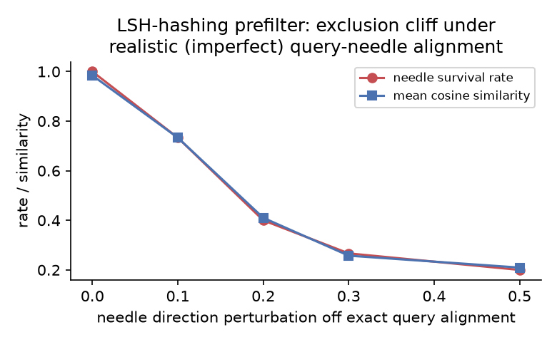
TauMonarchAttention is the mechanism that survived every adversarial construction in this investigation. Its design:
Every component above was independently verified numerically identical to its reference implementation before being trusted in a cost or quality claim, following the discipline established in Section 3.
Under the identical same-norm-controlled construction that disqualified every compressed- representative mechanism (Section 4), TauMonarchAttention matches or exceeds dense attention's own retrieval quality: mean cosine 0.91–0.93 against dense's 0.86–0.88, with a 100% success rate on both, across single- and multi-needle constructions. This is consistent with the architectural principle stated in Section 2: TauMonarchAttention's one compressed component (the non-survivor aggregate) only ever aggregates content that has already been real-scored and rejected by τ—it is never asked to carry detection signal the way a block representative is, and so cannot inherit the same exclusion-cliff risk.
TauMonarchAttention inherits one known limitation from dense attention itself, not introduced by the sparsification: under crafted adversarial pressure (a decoy engineered to score competitively against a real needle in the final softmax), both dense attention and TauMonarchAttention fail at a matched rate (∼90%). We consider this confirmed, not merely observed once, because four architecturally distinct selection mechanisms—dense attention itself, bucket routing, oracle/reservoir-estimated threshold selection, and the LSH-hashing prefilter—independently converge on the same ∼90% ceiling under the identical adversarial construction, rather than one construction being run four times. This is a scoring-layer vulnerability inherited from softmax competition itself, not a selection-layer defect, and is filed as an accepted, model-level risk shared by every mechanism in this report—including dense attention.
Empirical instrumentation of a real run (not assumed from the threshold's nominal 90th-percentile rate) shows the QK⊤ scoring stage gets zero savings relative to dense attention—every key in every active tier is still scored, a structural consequence of needing a real score to apply τ at all. Only the AV/softmax stage benefits from the ∼10% survivor rate, and even there the total survivor count across all active tiers still scales O(N), dominated by the largest tier—a constant-factor discount, not a complexity-class win.
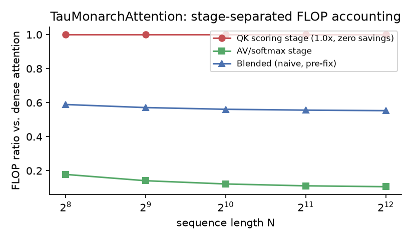
An earlier version of the cost model omitted the cost of computing the non-survivor aggregate—counting only the terms that enter the final combined softmax, not the masked reduction required to construct them. This single omission, once measured, eroded the blended FLOP ratio from a projected ∼0.55× (implying a 1.8× speedup) to ∼1.05–1.23× (no savings, or a net loss versus dense). The exact-algebraic fix described in Section 5 recovered most, but not all, of the original estimate: a verified blended ratio of ∼0.55–0.65×, i.e. a genuine ∼1.5–1.7× analytical speedup ceiling—before real hardware measurement corrected this further (Section 7.3).
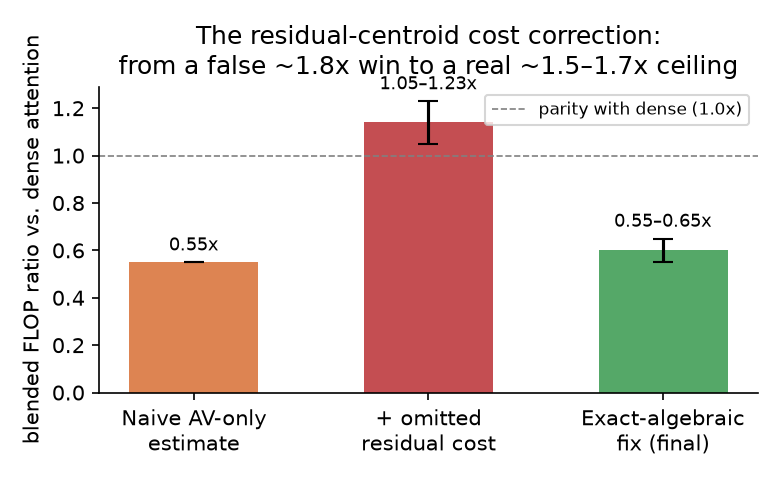
A standalone Rust crate implementing dense, CausalMonarchAttention, SlidingMonarchAttention, and TauMonarchAttention—each cross-validated against PyTorch references to float32 rounding-noise precision (1e-7–1e-8 max absolute difference) before any timing was trusted—was measured with criterion (wall-clock) and perf stat (hardware counters) on the actual target 5500U.
The first measurement falsified the analytical estimate: TauMonarchAttention measured slower than dense attention at every sequence length tested (11.69s vs. 9.11s at N=8192). perf record attributed 56% of total CPU cycles to core::slice::sort::stable::quicksort—the sort-based τ-quantile computation, which the original cost model had explicitly (and incorrectly) assumed away as "not O(n log n) sort." Replacing the sort with quickselect (O(n) average, verified to produce an identical τ value) recovered the win: a genuine, hardware-measured 1.22× speedup over dense attention at N=8192—smaller than the original 1.5–1.7× analytical estimate, but real.
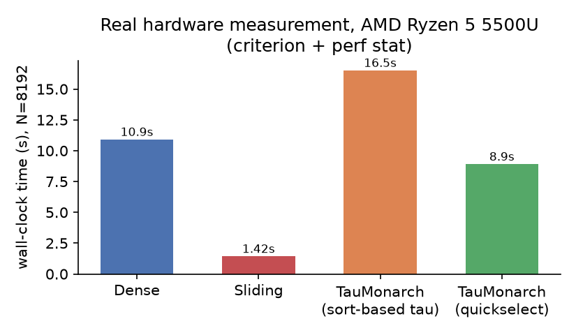
Confirming this held on the real production model configuration (grouped-query attention, head_dim=64, n_q_heads=14, n_kv_heads=2), a roofline analysis placed both dense attention and TauMonarchAttention decisively in the compute-bound regime—but with materially different margins, which we report separately rather than merged, after an earlier draft of this same analysis was caught conflating the two: TauMonarchAttention lands ∼15–28× above the 5500U's estimated memory/compute ridge point at the project's target sequence lengths, while dense attention, doing strictly more total work, lands further above it still, ∼25–48×. Both margins are wide enough that neither conclusion depends on optimistic assumptions about kernel efficiency, and both mechanisms' realized FLOP reduction should, and did, translate into wall-clock time rather than being absorbed by memory bandwidth.
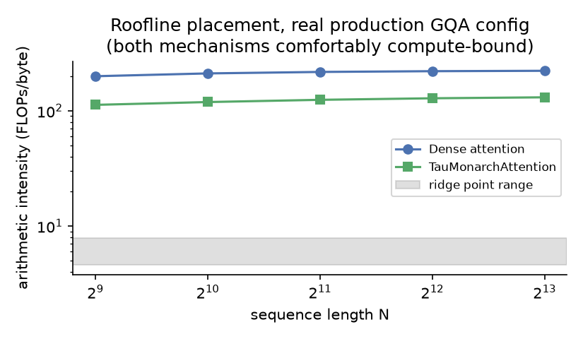
Every mechanism in Sections 4.1–4.6 used an untrained representative-construction heuristic. Gradient-trained representative construction had never been tested in this investigation and was flagged as the one genuinely open axis: real published landmark-attention systems use trained, not untrained, summarizers, which is suggestive but not dispositive.
A small trainable module (a per-key MLP transform followed by multi-head attention pooling) was trained to select, not summarize: given real per-key scores against a query, decide which block to route real attention to. Two training regimes were compared: an indirect retrieval loss (maximize cosine similarity to the true value) and a direct listwise cross-entropy loss on block-selection scores. Both regimes produced statistically indistinguishable selection accuracy (37.1% vs. 34.7% at M=16 candidate blocks, 3-seed spread 3.0 percentage points)—ruling out training-objective mismatch as the bottleneck. The mean selection margin (needle's own score minus the best competing block's score) was negative at every seed tested, and a sweep across candidate-block count M confirmed an order-statistic explanation: margin degrades smoothly as √(2 ln M), a structural property of extreme-value competition, not an artifact of training procedure.
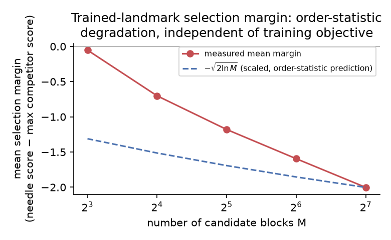
Per Section 3.3's discipline, a numerical bar was fixed before running the deciding experiment: recovering ≥80% of TauMonarchAttention's retrieval quality must not require admitting more than 50% of candidate blocks to real scoring. A first implementation, using a fixed top-k admission quota, passed this bar comfortably (30% admission recovered 84.5% of reference quality). This result was itself an artifact: a fixed quota always admits exactly k blocks regardless of the landmark's actual confidence, an implicit guarantee genuine Louver-style thresholding does not provide. Replacing the quota with a real, score-based threshold—and catching a second bug in our own first attempt at this replacement, where a per-query quantile of that same query's own scores was found to silently reproduce the same rank-based guarantee (zero variance in admitted-block-count across 30 trials, a tell that immediately exposed the error)—produced a materially different result once corrected with a genuinely query-independent threshold: the 80%-quality target was only reached at 61.7% average block admission, failing the pre-committed 50% cap.
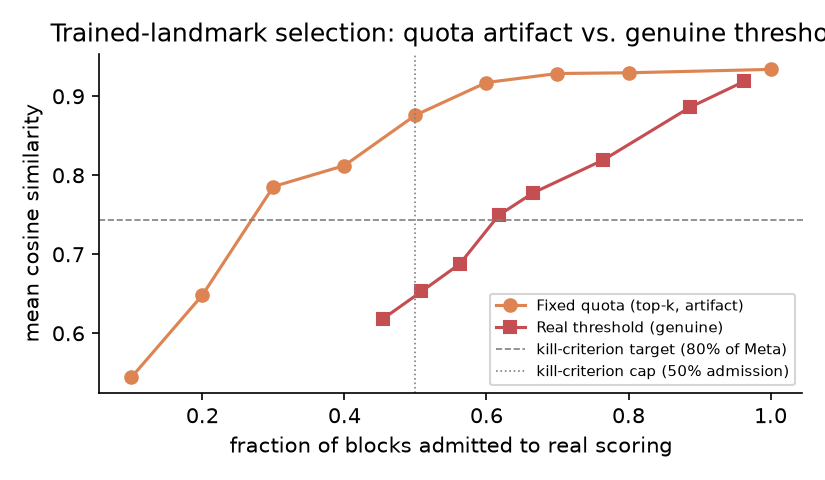
A separate FLOP accounting of the trained landmark's per-key construction cost found it to be 72× a real per-key dot product (verified by direct computation, dimension-independent). Amortizing this cost across all future queries that reuse a cached, once-computed representative (architecturally analogous to TauMonarchAttention's own precomputed block sums) would have made the 30%-admission (quota) result genuinely economical relative to TauMonarchAttention's own scoring cost—but this amortization assumption was never tested, and the accuracy result in Section 8.2 makes it moot: the real admission rate required is 61.7%, not 30%, at which point the mechanism offers no meaningful advantage over simply reading everything.
The trained-landmark axis is closed for the architecture and training setup tested. Two independent lines of evidence—the negative selection margin under direct margin training, and the real-threshold admission-rate failure—converge on the same conclusion via different mechanisms, which we regard as stronger grounds for closure than either alone. Larger-dimension trained landmarks remain a genuinely open, unexplored question (the tested configuration used a toy head dimension of 16); we do not pursue this further here, consistent with the proportionate-scope discipline that motivated pre-committing the kill criterion in the first place.
Every failed mechanism in this report shares a single structural property: it decides what matters via some compressed, pre-score summary of a block's content—a centroid, a magnitude statistic, a farthest-point sample, a Sinkhorn-refined representative, a hash bucket, or a gradient-trained pooling vector. Every one of these, independently and by different specific mechanics, failed the same adversarial control once that control was applied. TauMonarchAttention's defining property is not any particular architectural cleverness; it is the absence of this failure mode by construction—survivorship is always decided by a key's own real score, and the one place compression is still used (the non-survivor aggregate) only ever aggregates content that has already lost the real-score comparison, never content that might have been the answer.
A second, methodological thread runs through this report, and it is more frequent than a short list can convey: repeated instances where an analytically or synthetically favorable result was reversed only after real measurement. The most consequential examples are detailed in this paper—the residual-centroid FLOP omission (Section 7.2), the sort-cost discovery on real hardware (Section 7.3), and the fixed-quota artifact in the trained-landmark kill criterion (Section 8.2)—but the underlying research log records a longer tail of the same pattern at smaller scale: a scaling-factor (H-head-count) bug and a missing grouped-query-attention correction in an early roofline calculation, a tiling-convention mismatch in a memory-traffic comparison, and a cost-model table row that asserted a cheap threshold-estimation method had been built and measured when it had, at that point, only been proposed. We report the three headline cases in detail because they are the ones that changed a design or cost conclusion; we name the smaller ones here explicitly rather than let their absence imply this was a rare occurrence. In every case, the discipline that caught the error was the same: treat a plausible-sounding result as a hypothesis to be checked against a harder, more adversarial, or more directly-measured version of the same question, not as a conclusion. We think this discipline, more than any single design choice, is the transferable contribution of this report.
TauMonarchAttention—Fenwick-tiered shared-threshold selection over real per-key scores, with an exact-algebraic non-survivor aggregate, quickselect-based threshold estimation, and no iterative refinement—is, to our knowledge, the only mechanism in this eight-way comparison that survives a same-norm-controlled adversarial needle probe at parity with dense attention itself. On the target hardware, it delivers a real, hardware-measured 1.22× wall-clock speedup over dense causal attention at the project's target context lengths. Every alternative we tested that relies on a compressed representative computed before real per-key scoring—whether hand-designed, iteratively refined, or gradient-trained—failed the same control. We regard the eight-mechanism negative-result arc, and the specific discipline that produced it (same-norm adversarial construction, multi-seed statistics, pre-committed kill criteria, and hardware-measured rather than analytical cost claims), as the report's primary contribution, with TauMonarchAttention itself as its validated output.
[Louver] "Sparse Attention as a Range Searching Problem: Towards an Inference-Efficient Index for KV Cache." arXiv:2605.06763, 2026. Reformulates sparse attention as halfspace range searching; an index structure guaranteeing zero false negatives with respect to a specified threshold.
[Landmark Attention] A. Mohtashami and M. Jaggi. "Landmark Attention: Random-Access Infinite Context Length for Transformers." arXiv:2305.16300, 2023. NeurIPS 2023. Trains a landmark token per block to select relevant blocks for retrieval within the attention mechanism.
[Monarch] T. Dao, B. Chen, N. Sohoni, A. Desai, M. Poli, J. Grogan, A. Liu, A. Rao, A. Rudra, C. Ré. "Monarch: Expressive Structured Matrices for Efficient and Accurate Training." arXiv:2204.00595, 2022. ICML 2022 (PMLR 162). Block-diagonal butterfly-factorized structured matrices for hardware-efficient training.
[Monarch Attn] C. Yaras, A. S. Xu, P. Abillama, C. Lee, L. Balzano. "MonarchAttention: Zero-Shot Conversion to Fast, Hardware-Aware Structured Attention." arXiv:2505.18698, 2025. Computes an optimization-based approximate projection of an already-trained, non-causal dense softmax attention layer onto the class of Monarch matrices, with no additional training; reports 1.4–8.2× wall-clock speedup over FlashAttention-2. The originating work this investigation adapts to the causal, from-scratch-trained setting (Section 2.1).
[MoBA] E. Lu et al. (Moonshot AI). "MoBA: Mixture of Block Attention for Long-Context LLMs." arXiv:2502.13189, 2025. Applies mixture-of-experts routing principles to block-sparse attention, deployed in production for long-context inference.